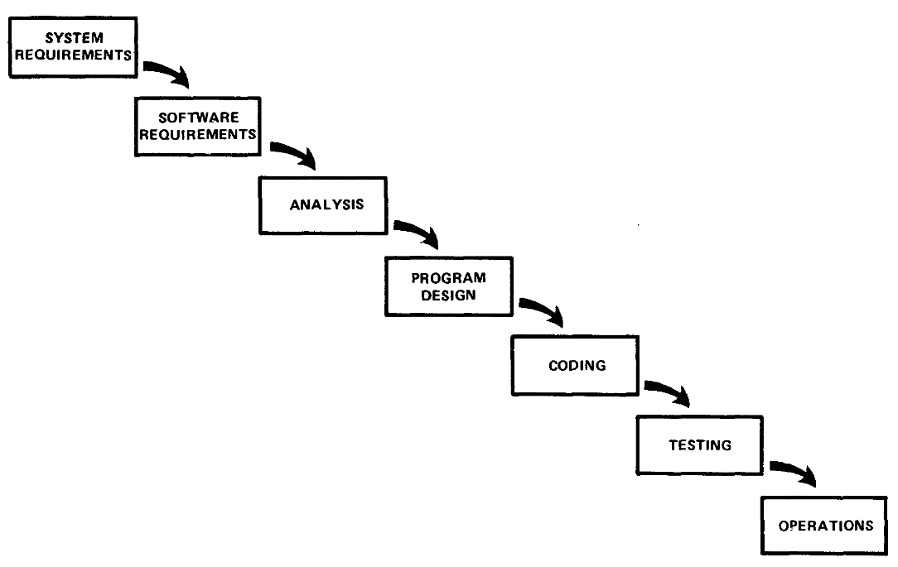
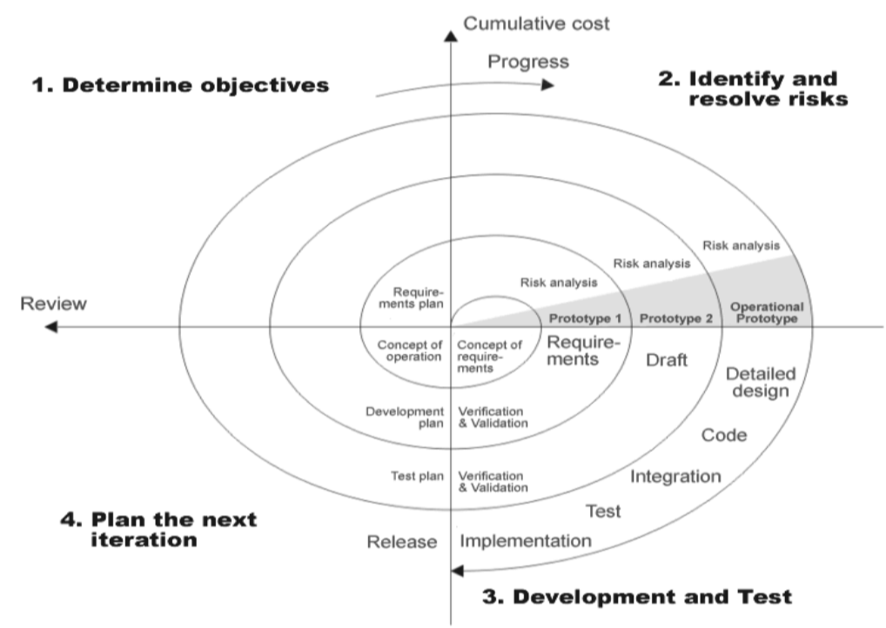
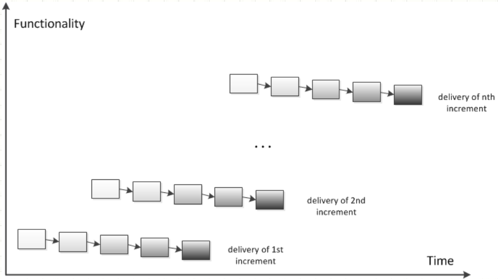

class: center, middle, main-title # Software Engineering Software process, life cycle models, methods --- ## Plan - This and the next lecture - Software process, life cycle models, methods - Project planning and management - Shortly after that - The second delivery --- ## Software crisis - Recap: "The Software Crisis" - Term coined in the NATO Software Engineering Conference (1968) -- - Standish Group reports: - [1994-2000](https://www.cin.ufpe.br/~gmp/docs/papers/extreme_chaos2001.pdf) - [2011-2015](https://www.standishgroup.com/sample_research_files/CHAOSReport2015-Final.pdf) ??? - Problems producing systems on schedule and to specification --- class: middle, center ## Software process ??? LT: "Programų kūrimo procesas" --- ## Quality - Product quality - Quality of the end result (software) -- - Process quality - One of a number of contributors to product quality -- - Software (product) quality is usually either unsatisfactory, or satisfactory, but at great cost -- - Naturally, we turn to process quality improvments ??? - Process improvement is largely domain agnostic. - Process quality improvements were largely successful in other industries. --- ## Software process - Ideal software process ??? LT: "Programų kūrimo procesas" -- - Is predictable (cost, schedule) -- - Produces software of sufficient quality -- - Intially software process research focused on process assessment and improvement - [SW-CMM predecessor (1988)](https://ieeexplore.ieee.org/stamp/stamp.jsp?arnumber=2014&casa_token=hIvssq46ACQAAAAA:qNnRd-dPN2KBdwuNzSZDt9_tWLus3WbMPQWO6nO9qhIlrJNH1pCY8nsSJsM8dNWqJJVMn-449A&tag=1) - [CMM levels](https://upload.wikimedia.org/wikipedia/commons/e/ec/Characteristics_of_Capability_Maturity_Model.svg) ??? - Assessment: Where do we stand now? - Improvement: What do we need to do to get to the next level? - SW-CMM: https://ieeexplore.ieee.org/stamp/stamp.jsp?arnumber=2014&casa_token=hIvssq46ACQAAAAA:qNnRd-dPN2KBdwuNzSZDt9_tWLus3WbMPQWO6nO9qhIlrJNH1pCY8nsSJsM8dNWqJJVMn-449A&tag=1 - [Benefits of maturity](https://klevas.mif.vu.lt/~ragaisis/PKP_2019/PKP-01-Ivadas_2019.pdf) --- class: middle, center ## Software life cycle models ??? LT: "Programų sistemų gyvavimo ciklo modeliai" Kartais vadinama "proceso modeliais", kas šiek tiek painiojasi su "(etaloniniais) procesų modeliais" - process reference models - kurie apibrėžia procesus, bet neapibrėžia eiliškumo --- ## Definitions > **Life cycle** - evolution of a system, product, service, project or other human-made entity from conception through retirement. > <br><br> > **Life cycle model** - framework of processes and activities concerned with the life cycle that may be organized into stages, which also acts as a common reference for communication and understanding. > <br><br> > Models may be used to represent *the entire life* from concept to disposal *or* to represent the *portion of the life* corresponding to the current project. > The life cycle model is comprised of a sequence of stages that may overlap and/or iterate. > <br><br>— <cite>ISO/IEC 12207:2008</cite> ??? Programų kūrimo procesų tyrimų srityje viena didžiausių problemų - konkuruojančios sąvokų sistemos (CMM/CMMI modelių vs. SPICE modelių/ISO standartų). Sąvokų problema dar paaštrėjo, nes išsiplėtus tyrimų sričiai tiek gyvavimo ciklo modeliai, tiek programų kūrimo metodikos imtos vadinti proceso modeliais. Terminology: - A process consists of **a set of** interrelated **activities that transform** one or more **inputs into outputs** while consuming resources to accomplish the transformation. (SWEBOK 3.0) Each stage is described with a statement of purpose and outcomes. The life cycle processes and activities are selected and employed in a stage to fulfil the purpose and outcomes of that stage. (Each organization selects, adapts, or defines their own) --- ## In other words - A software life cycle model is a description of **main stages** carried out in a project, including their outcomes, and their temporal and logical **interdependencies and relationships**. --- ## Code-and-fix model 1. General idea -- 1. Ad-hoc development -- 1. Release or time/money runs out ??? Take an informal general product idea and just develop until a product is "ready". Is this a useful model? It depends. --- ## Code-and-fix model - Advantages: - No overhead / bureaucracy -- - See progress quickly -- - Disadvantages: - Dangerous - No way to assess progress, predict timing, or manage risks - Unclear scope and quality - Unlikely to accomodate changes -- - Impossible for large projects -- - Consider: - For very small projects - For short-lived prototypes --- ## What is a good model? One that helps us fall into the *Pit of Success*. -- > *The Pit of Success*: in stark contrast to a summit, a peak, or a journey across a desert > to find victory through many trials and surprises, > **we want our customers to simply fall into winning practices** by using our platform and frameworks. > > To the extent that we make it easy to get into trouble we fail. > <br><br>— <cite>Rico Mariani, MS Research MindSwap, Oct 2003.</cite> --- ## What is a good model? In other words: - One that leads to better product in less time, with fewer resources -- Usually through: - Aiding communication - Helping judge progress - Keeping everyone organized --- ## Waterfall model  ??? - Source: http://www-scf.usc.edu/~csci201/lectures/Lecture11/royce1970.pdf - Circa 1970. Royce is often credited, but he neither used the term "waterfall" nor portray it as desired - Fits other engineering process models (construction, assembly line) - Feedback from next stage --- ## Waterfall model - Single, document-driven linear sequence for all the requirements. -- - Advantages: - Easy to understand and implement - Identifies deliverables and milestones - Produces comprehensive documentation -- - Disadvantages: - Risky - Expensive to change product late - Significant administrative overhead ??? - Natural - Reinforces good habits (define before design, design before code) - Often unrealistic to expect accurate requirements early in project - "Swimming upstream" is costly - Customer value at the end of the project only -- - Consider: - For complex, but very well-understood projects - For large/mature products and weak teams --- ## Iterative model  ??? - In the picture: Spiral model (1988): Waterfall model extended with iterations for managing risks during planning and design. Key idea: on each iteration identify and solve sub-problems with highest risk - Iterative model would start with an initial, simplified implementation, which progressively gains more complexity. One iteration in prorgess at a time. Iterative (metaphor: getting a tailor-made coat made): - Pros: low risk, flexible - easy to adapt to changes, little administrative overhead, widely used, optimizes early feedback - Cons: visibility is not great (how many iterations remain?), difficult to plan, - Use: for continuous product development / improvements --- ## Incremental model  ??? - Metaphor: three-course meal (serve one in full, then serve another). - We build the part that is fully clear, then clarify and build another part and so on. - Mutliple increments can be in development in parallel. - Pros: very practical, widely used and successful, intermediate deliveries satisfy customers and show progress, feedback, problems visible early - Cons: Product must be decomposable, if not - risk of suboptimal architecture - Exploratory development category --- ## Life cycle model variations - Most models are variations/combinations of a few basic models -- - Waterfall-like start (conceptual development, requirement analysis, architectural design), then: -- - Incremental development, where increment is a predefined milestone -- - Incremental development until time runs out, where increment is the current top-priority deliverable -- - Iterative start with waterfall-like delivery, with main goal of: -- - mitigating risks (spiral) -- - clarifying requirements (evolutionary prototyping) ??? - key idea: customers are non-technical and do not know what they want - very practical, widely used and successful - steady signs of progress for customer - addresses risk of incorrect user requirements - useful when requirements are not known or changing - supports early product marketing - participatory design, close involvent a must - problems with planning - temporary fixes become permanent constraints (or unstable prototype becomes final product) - easy to fall into code-and-fix -- - Incremental can be mixed with iterative (to deliver successively refined increments) ??? There is no ideal model - combine and tailor according to your circumstances --- class: middle, center ## Software development methods ??? LT: "Programų kūrimo metodikos" --- ## Family of Agile methods - Agile is an umbrella term -- - Methods evolved during the 1990s -- - [Agile Manifesto (2001)](https://agilemanifesto.org/) -- - Shared features: -- - Continuous incremental deliveries -- - Customer collaboration -- - Embracing change -- - De-emphasised documentation ??? Lightweight. As an opposite of heavyweight methods (collectively often referred to as waterfall) -- - Examples: [Scrum](https://en.wikipedia.org/wiki/Scrum_%28software_development%29#/media/File:Scrum_Framework.png), [Kanban](https://d112uwirao0vo9.cloudfront.net/wp-content/uploads/2018/11/Explicit-Policies-in-Kanban-Board-1024x613.png) ??? - Show Agile success stats from reports --- ## Agile methods - Advantages: - Low overhead - Emphasizes final product - Focuses on teamwork -- - Disadvantages: - Difficult to scale - Not always well understood - Projects often have fixed scope and budged ??? - Fits small-medium projects and teams well - Requires close customer involvement --- ## Key takeaways - Better software processes lead to better software products -- - A perfect software process would be perfectly predictable -- - Software life cycle model = main stages carried out in a project, and their relationships -- - Most life cycle models are variations of a small number of basic models -- - There is no "best" life cycle model - pick or tailor to balance between: -- - Risk exposure -- - Predictability -- - Customer involvement -- - Administrative overhead -- - Agile methods are lightweight, widely used, but not always well understood --- ## Reading assignment Mandatory: - Two lists: [Agile Manifesto](https://agilemanifesto.org/) and [Agile Principles](https://agilemanifesto.org/principles.html) - Paper: [W. Royce. Managing the Development of Large Software Systems](http://www-scf.usc.edu/~csci201/lectures/Lecture11/royce1970.pdf) Recommended: - Talk: [Real Software Engineering by Glenn Vanderburg](https://www.youtube.com/watch?v=RhdlBHHimeM) ??? - Notice similarities between Royce and Agile --- class: middle, center # Questions?